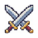

组件样板 / 2026-09-24 / draft-1
江湖挂机 · UI组件样板
独立演示，不读取或修改游戏存档。城镇/野外主页已接入第一批样式；战斗页待升级。
这里验收字体、尺寸、颜色与通用操作；图标沿用现有资源。演示按钮不会执行真实游戏操作。
01 基础样式与按钮
背景
面板
主色
正文
标题 15px · 像素武侠
正文 13px，信息清楚，保持紧凑。
说明 12px。图标本身不随按钮点击区扩大。
禁用原因始终可见；按 Tab 查看键盘焦点。
02 角色状态与导航
少侠无名 Lv.18
中立 · 剑客 · 演示数据
生命值820/1000
内功值260/300
经验值1250/3000
导航图标固定32px；头像26×38px。
03 战场敌人 8/8

野猫120/180
蛤蟆120/180
精英野猫★ 精英 · 460/600
野猫120/180
蛤蟆预热 0.8s · 120/180
野猫已击败 · 0/180
名字特别长的战场敌人示例120/180
野猫120/180
当前区域暂无敌人
这是空状态展示，不生成实际怪物。
精英、预热、死亡与长名称；图标固定18px。
04 日志与反馈
战斗细节
掉落细节
击败野猫：经验 +25
金币 +8
获得金创药 ×1
获得名字很长的装备物品示例，完整文本自然换行，不推宽面板。
成功：设置已保存（样式示例）
提醒：背包已满（样式示例）
错误：输入内容无效（样式示例）
05 物品格与数量操作
已选择：武器示例
数量示例仅用于可堆叠物品，上限12。装备实例不使用批量数量操作。
暂无物品
空列表使用明确说明，不显示假道具。